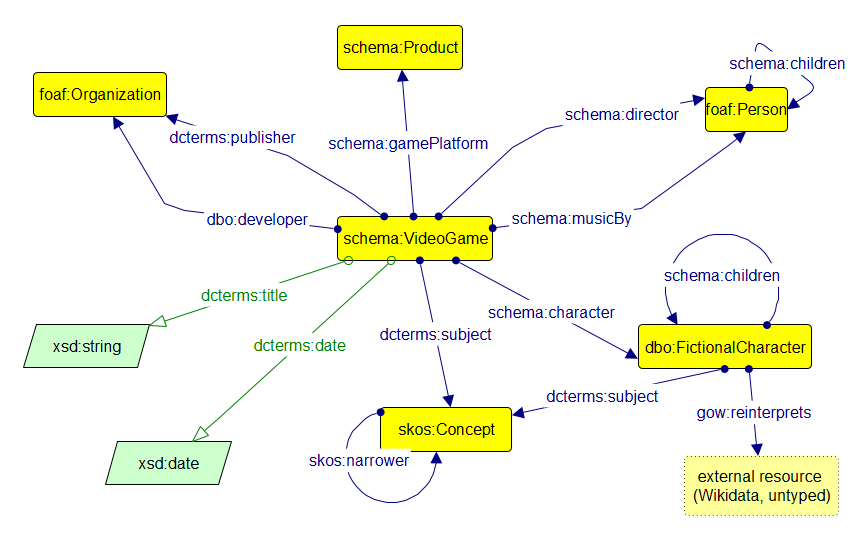

Reuse first, coin only when necessary
The starting principle for the conceptual model is that shared vocabularies are almost always preferable to invented ones. A graph that draws on schema.org, DCMI Terms, FOAF, SKOS and DBpedia (DBO) can be consumed by any tool that already knows those vocabularies, and its assertions inherit whatever cross-vocabulary alignment those tools already carry. A graph that leans heavily on a local ontology only interoperates with itself.
The concrete mapping between the entity types identified in Phase 1 and the classes and properties they instantiate is summarised below.
| Entity type | Class(es) | Reconciliation property |
|---|---|---|
| The game itself | schema:VideoGame |
owl:sameAs |
| Real people (director, composer) | foaf:Person |
owl:sameAs (to Wikidata and VIAF) |
| Organisations (developer, publisher) | foaf:Organization |
owl:sameAs (to Wikidata and VIAF) |
| Fictional characters (Kratos, Atreus) | foaf:Person, dbo:FictionalCharacter |
owl:sameAs |
| Mythological figures (Odin, Thor, …) | foaf:Person, dbo:FictionalCharacter |
gow:reinterprets |
| Object (PlayStation 4) | schema:Product |
owl:sameAs |
| Concepts (Norse mythology, Greek mythology) | skos:Concept |
skos:exactMatch |
Production relations between the game and the entities reuse the specific properties that Wikidata's mapping community has aligned to each role: schema:director for Barlog, dbo:developer for Santa Monica Studio, dcterms:publisher for Sony Interactive Entertainment, schema:musicBy for McCreary, and schema:gamePlatform for the PlayStation 4. Characters are attached to the game with schema:character, subjects with dcterms:subject, and family relations between characters (in and out of the game's narrative) with schema:children. Data properties are limited to dcterms:title (range xsd:string) and dcterms:date (range xsd:date).
Why mythological figures are also dbo:FictionalCharacter
Odin, Thor, Freyja, Baldur, Loki, and Jörmungandr are not just names cited in passing — they appear, speak, and act within the game's own narrative, exactly as Kratos and Atreus do. Typing them dbo:FictionalCharacter as well as foaf:Person makes that explicit, and it has a direct payoff for the model: it gives gow:reinterprets a single, uniform domain class instead of splitting the property's subjects across two different types depending on which character happens to be mid-conversation with which god. The alternative — leaving the six mythological figures as plain foaf:Person — would have worked too, but would have made "who reinterprets a myth" a property of an arbitrary subset of persons rather than a property of characters specifically, which is the claim the project actually wants to make.
The same reasoning extends one step further: each mythological figure also carries its own dcterms:subject triple to gow:norse-mythology — not just the game as a whole. Without it, the graph would only say "the game is about Norse mythology", leaving the individual deities' membership in that pantheon implicit. skos:narrower — visible as a self-loop on skos:Concept in the diagram below — cannot carry that link itself: it only connects two skos:Concept instances, and the deities are modelled as characters, not concepts. It stays in the diagram because it is a genuine part of the SKOS vocabulary this project reuses (a concept scheme can always have narrower concepts), even though no triple currently instantiates it.
The conceptual diagram
The conceptual model is drawn using Graffoo, a graphical notation for OWL ontologies, diagrammed in yEd Graph Editor using Graffoo's own official yEd palette. Classes are yellow rectangles, object properties are labelled blue arrows between classes, and data properties are green arrows to XSD datatypes. This is a class-level (TBox) diagram only — no individuals are shown; those belong to the RDF graph itself, covered in Phase 3. One box breaks the yellow-class convention on purpose: the dashed, unfilled "external resource (Wikidata, untyped)" box that gow:reinterprets points to is not a class in this ontology at all — it marks that the property's range is an external, untyped identifier, and dashing it visually distinguishes "resource we don't own" from "class we defined". dcterms:subject appears twice, from two different sources into skos:Concept — once from the game as a whole, once from each individual mythological figure — reflecting the two-level subject link discussed above. Self-loops on schema:children (character to character) and skos:narrower (concept to concept) express relations that can hold between two instances of the same class.

The coined property: gow:reinterprets
The single new term in the ontology is the property gow:reinterprets. It is declared as an owl:ObjectProperty and as a subproperty of dcterms:relation, and its intended reading is: the subject character (as portrayed in the game) is a fictional reinterpretation of the object entity (as attested in the mythological tradition).
gow:reinterprets a owl:ObjectProperty ;
rdfs:subPropertyOf dcterms:relation ;
rdfs:label "reinterprets"@en ;
rdfs:comment "Relates a character in the game to the mythological figure they are based on. Used instead of owl:sameAs when the Wikidata entry describes the myth figure, not the fictional character."@en .Two questions naturally arise here: why coin a new property at all, and if a new property is needed, why place it below dcterms:relation in the hierarchy rather than below something more specific?
Why a new property is needed
The obvious candidates from standard vocabularies all miss the target in one direction or another.
owl:sameAs would say that the game's Baldur is the same individual as the mythological Baldur. This is convenient (all the myth-derived triples become facts about the game character as well) but semantically wrong: the game's Baldur is Odin's son by Freyja, whereas the mythological Baldur is Odin's son by Frigg. If owl:sameAs held, an OWL reasoner would deduce that the game character had two different mothers, or that Freyja and Frigg were the same individual (they are not — Frigg is Odin's wife in the Æsir, Freyja is a Vanir goddess and Njord's daughter). The whole modelling point is precisely that the game differs from the myth on this genealogy, and owl:sameAs would erase the difference.
schema:isBasedOn is close in spirit but its domain and range are CreativeWork — it says that a work is derived from another work, not that a character is derived from a figure. Coercing it onto individuals would misuse the property.
dcterms:source is defined as "a related resource from which the described resource is derived". Its domain is not restricted, so it could apply, but its semantics as usually understood is bibliographic — a text has a source text, a translation has a source language. Applying it to a character-to-figure relation would be a stretch and would obscure the specifically fictional-adaptation nature of the link.
skos:closeMatch or skos:relatedMatch apply only to skos:Concept instances, and the entities in question are typed as foaf:Person, not as concepts.
So the field is empty in exactly the shape this project needs. A new property, declared with a clear rdfs:comment, closes the gap.
Why below dcterms:relation
dcterms:relation is the most generic "these two things are meaningfully connected" property in the DCMI vocabulary and its use is not restricted by class. Placing gow:reinterprets as its subproperty is a conservative choice: any SPARQL query that asks for dcterms:relation triples will also surface the gow:reinterprets ones, preserving the graph's readability from a naive consumer's point of view, while the more specific label remains available to consumers who understand it. The alternative — declaring gow:reinterprets as a top-level property with no parent — would have made it invisible to any query that did not know it by name.
The interpretive payoff
With gow:reinterprets in place, the graph can carry two facts about Baldur that would otherwise be in tension. It can say gow:baldur gow:reinterprets wd:Q131658 (the game's Baldur is a reinterpretation of Norse Baldur), and simultaneously gow:freyja schema:children gow:baldur (in the game, Freyja is Baldur's mother). Nothing about the second triple projects onto the mythological Baldur at Wikidata; nothing about the first triple imports Frigg's motherhood into the game. The two identities remain distinct, and the specific way the game diverges from its source becomes a stateable fact rather than an implicit narrative choice.
Where the model goes next
The conceptual model is the blueprint; the actual RDF graph is the building. Phase 3 walks through how the model is instantiated as concrete triples: which Wikidata identifiers are attached to which entities, which properties fire between the game and its production, and how the family relations that follow from the mythological figures close the fiction↔myth loop.